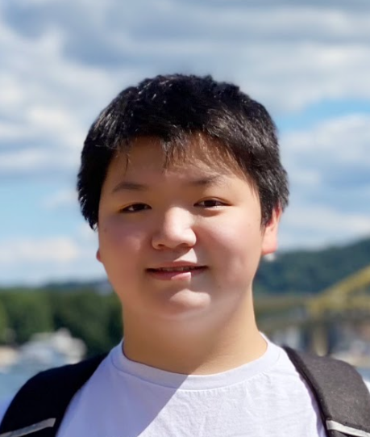

Absolute Value seeks to promote problem-solving and critical-thinking skills in middle schoolers through hosting academic competitions. We operate in nine states and counting, creating spaces nationwide where children can develop and exercise their skills in a friendly competition format.
Executive Board

Nick Hagedorn | President
Nick Hagedorn is a senior at Princeton High School. He became interested in math at a young age through the National Museum of Mathematics. He's also a big fan of logic puzzles and other games and has discovered that he can beat both Tylers at four-player chess. Nick first met Tyler Kim during the Ross Mathematics Program in 2021 as they struggled to prove quadratic reciprocity together. He returned to the program as a Junior Counselor in 2022. Outside of math, he competes in Public Forum debate. Nick also enjoys orchestral music composition and programming.
Tyler Kim | Board Member
Tyler Kim, the superior Tyler, is a freshman at Harvard University. He first discovered his passion for problem solving at a young age, when he was introduced to the Game of 24 (one of our competition rounds!). The idea of starting a collaborative and fun math day came to him when he visited his brother's class and realized how school sometimes relegates math into formulas and memorization, when it is much more. His roots in math and logic have also led him to pick up competitive chess, and he enjoys beating Tyler Yang often! In his free time, Tyler can be found playing basketball, reading, going on road trips with his family, and thinking about fantasy football outcomes.
Tyler Yang | Board Member
Tyler Yang, the actually superior Tyler, is a freshman at Stanford University. Puzzle culture runs in his family, and he’s spent his childhood solving logic puzzles, Harvard CS50x puzzles, and tackling other challenges. This, more recently, includes Wordle, NYT Spelling Bee, Quordle, Luminosity, and Octordle... He first got interested in competition in 9th grade, when his teacher recommended he start a competitive Math Club at Yorba Linda High School. When he’s not absolutely crushing Tyler Kim in chess, he spends his free time reading, strumming guitar, playing tennis, and running.
Eric Sui | Director of Canadian Operations
Eric Sui is a senior at Merivale High School. He was always interested in mathematics from a young age and it’s always been his favorite subject since first grade. He became involved in competition math in grade 6 and since then has participated in various math contests and camps such as AIME, CMO, and the Ross Mathematics Program. Outside of math, he enjoys programming, chess, and games. He hopes to bring more math and programming contests and resources to his hometown Ottawa, Ontario by organizing contests and volunteering to teach classes.
Camille Khong | Director of Media
Camille Khong is a senior at Yorba Linda High School. She became interested in math when she joined her 5th grade science olympiad in which she won first place at her state competition! She then began to learn how math is apparent in nearly everything through her time in the club. Her passion now is focusing on fostering an equitable educational experience for all and involves herself with various groups such as Future Business Leaders of America, Political and Social Activism Club, and Diversify our Narrative.
Featured Chapter Presidents
Evan Lim - Nevada
Evan was the Nevada State MATHCOUNTS Champion and a USAJMO qualifier (2022). He has qualified for AIME since 7th grade, and is President of his school's Math Club. Apart from math, he enjoys skiing, foosball, learning about aviation, following the St. Louis Blues, viola, and eating bread/bagels.
Kelly Lao - Pennsylvania
Kelly is a senior at Council Rock North High School in PA. She’s interested and mathematics and computer science, participating in the Ross Mathematics Program and researching at the Visual AI Lab. Aside from math and computer science, she enjoys playing tennis, listening to music, and hiking. She’s really excited to introduce you to Absolute Value!
Michael Zuo - Ohio
"Life moves pretty fast. If you don't stop and look around once in a while, you could miss it." - Ferris Bueller's Day Off
Victoria Outkin - New Mexico
"Life's a party!" - Unknown
Victor Long - Arizona
"Genius is 1% talent and 99% hard work" - Albert Einstein
Sammy Shankar - Texas
Sammy is a senior at A&M Consolidated High School in College Station, Texas. She’s passionate about mathematics, having participated in various math competitions and the Ross Math Program. Aside from math, she loves swimming, music, and trying new foods. She’s super excited to be a part of Absolute Value!
Bruce Tang - Illinois
Bruce is a junior at University Laboratory High School in Illinois. He is interested in computational science and mathematics. He enjoys anything puzzle-related, especially wordle and duotrigordle. Outside of math, Bruce enjoys running, swimming, music, and asking Nick for hints.
Jack Fan - Massachusetts
Jack Fan is a senior at Lexington High School. He's dived headfirst into studying AI and neuromorphic computing, as well as computer science at large. Outside of CS, he enjoys playing volleyball and handling fragile computer parts. He's really excited to welcome you to the Absolute Value competition!